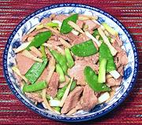

|
Pork with ScallionsChina - North | ||||
| Serves: Effort: Sched: DoAhead: |
2 main ** 40 min Prep |
This simple stir-fry of pork and vegetables hails from northern China (where only the white parts of scallions are used). Note that Chinese scallions tend to be much larger than those we have in North America. | |||
|
12 ------ 1 1 1/8 1 ------ 1/8 12 12 4 1/2 2 1/4 |
oz --- T T t --- in oz t T c |
Pork, lean -- Marinade Soy Sauce Rice Wine (2) Pepper Egg White ------- Ginger Root Scallions Snow Peas Bamboo Shoots Salt Oil Stock |
Prep - (30 min)
|